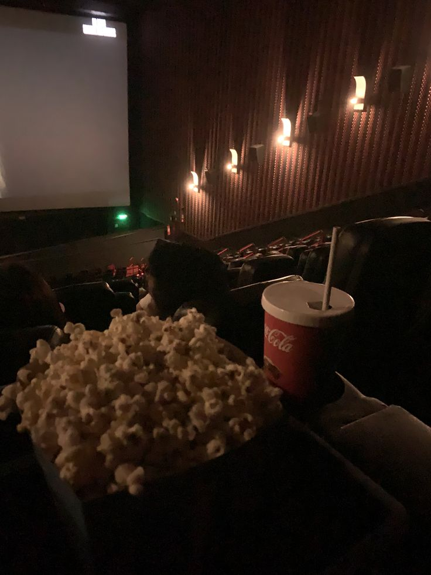
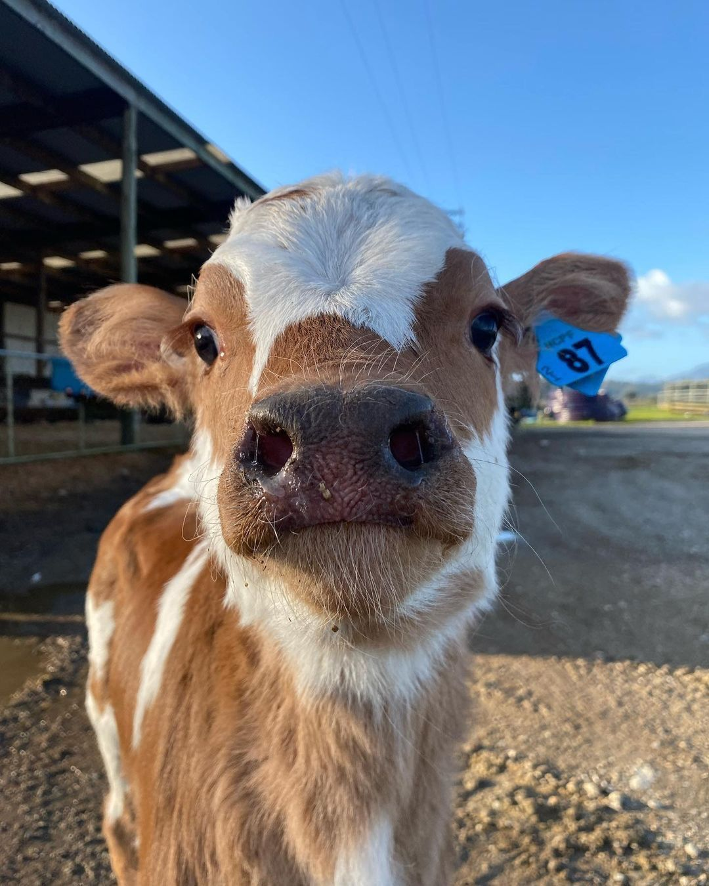
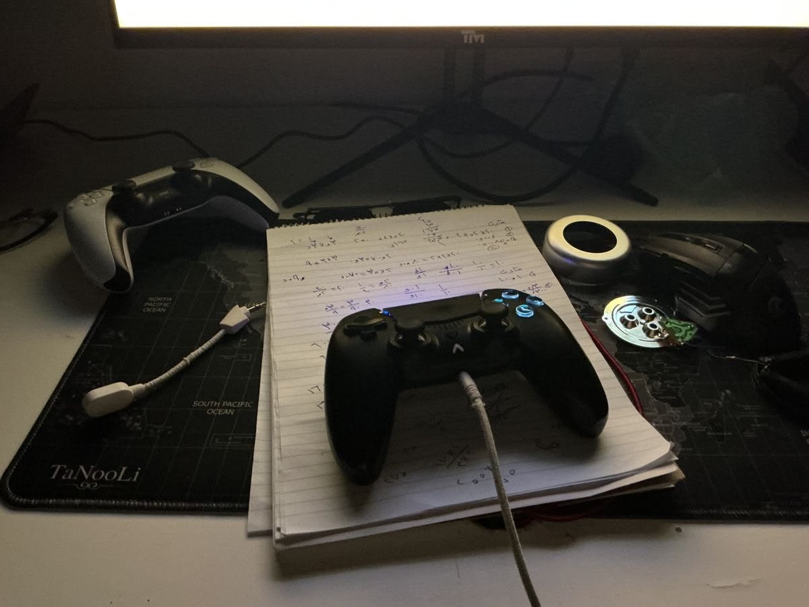

Cine
Es mi lugar favorito porque me gusta mucho ver peliculas nuevas e ir con mis amigos.
1er lugar favorito
Es mi lugar favorito porque me gusta mucho ver peliculas nuevas e ir con mis amigos.
1er lugar favoritoAunque no es un lugar en el que halla estado simepre me a gustado su estetica.
2do lugar favorito
Me gusta mucho estar en el campo porque es muy tranquilo y natural, ademas de que tiene muchos animales.
3er lugar favorito
Es un lugar seguro para mi, cuando tengo tiempo disfruto de dormir tranquilo
4to lugar favorito